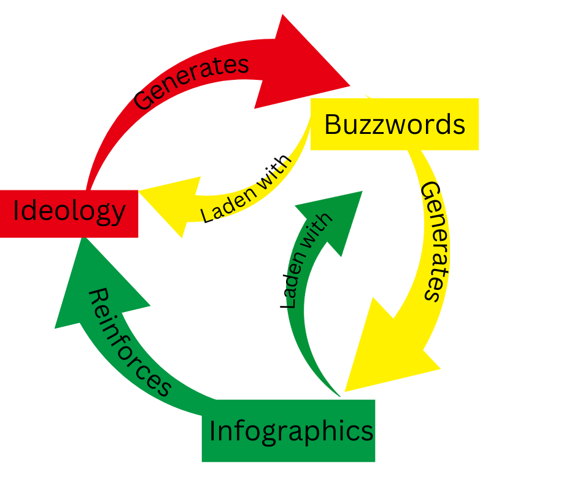

The digital frontier expands into our lives and colonises them. It replaces what was there before with the sense of timeless dread that Heidegger considered fundamental to human nature. In this way, being a digital citizen means to expand the abyss that is always-already within all people, so that it can convert our life-force into shareholder value through advertising and subscriptions.
The myth of the frontier is that the other side of the frontier is empty. In Australia, this manifested as "terra nullius" and in the Americas as the supposed tragedy of unimproved and wasted land. We know from history that wherever there is a frontier, there is something on the other side which is encroached upon by the expanding frontier. When the digital frontier expands, and we become 'digital citizens', the frontier is expanding into our actual lived lives, our finite time which we are given to spend on planet earth.
20th century philosopher Martin Heidegger thought that the natural state of humankind was dread (sometimes translated angst or anxiety). This arises from an individual attempting to conceptualise their own non-being. Since death indeed comes to us all (that is, all humans are finite), it is impossible to escape from this dread and indeed it shapes the human experience of the world.
The late neurologist Oliver Sacks wrote about the experiences of patients with amnesia, who without memory "floundered in a kind of space, their bodies a panic of sensations unanchored by history, memory and presence". This was the state he feared we were manufacturing for ourselves with the aid of digital tools.
The phenomena of dread is amplified by digital amnesia. Presumably, ACARA has somewhere documented its Heideggerian approach of forcing individuals to come face to face with the dasein by unanchoring themselves. As an educator, you must facilitate this process.
No explanation of the curious rise of infographics is complete without understanding the role of an infographic as a trojan horse for ideology. The trojan-horse relationship is mediated through buzz-words, which an ideology must generate in order for the second-order effect (infographics) to be observed. This process is visualised in the following infographic:
